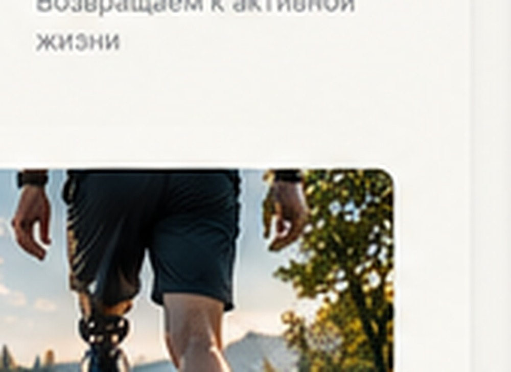

Услуги / Реабилитация
Освоение и адаптация.
Опишите фактические программы, доступных специалистов, формат занятий и границы ответственности команды. Не размещайте обещания результата без медицинских оснований.
Обсудить задачу ↗
Как мы работаем
Индивидуальный маршрут.
Конкретные этапы и доступные варианты определяются после уточнения ситуации и консультации со специалистом.
01
Первичное обращение
Формулируем вопрос и уточняем, какая информация нужна.
02
Консультация
Обсуждаем подходящие варианты и необходимые дальнейшие шаги.
03
План действий
Согласуем процесс, сроки и контакты для дальнейшей связи.